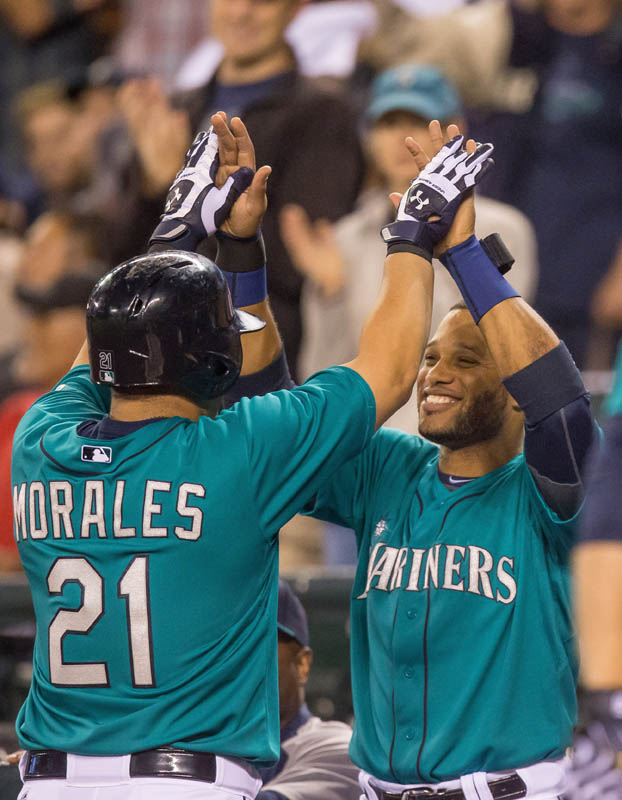
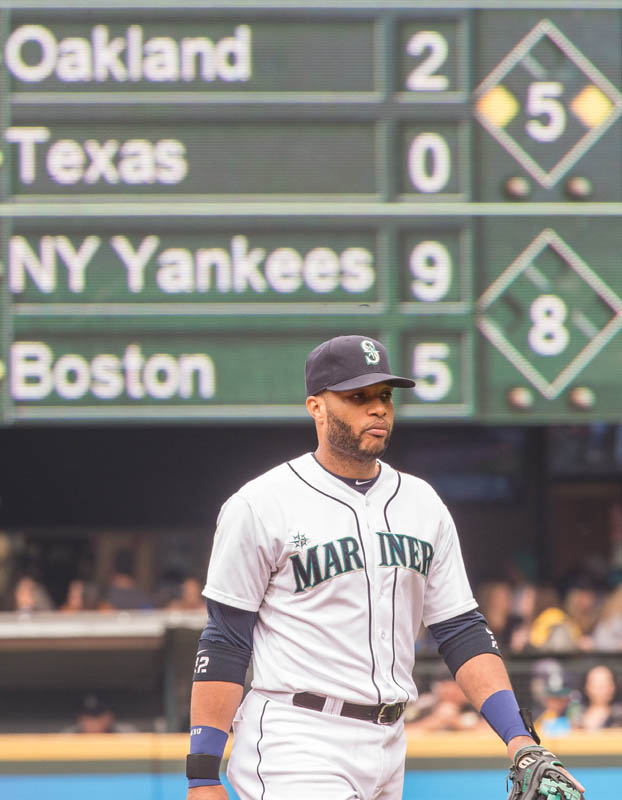
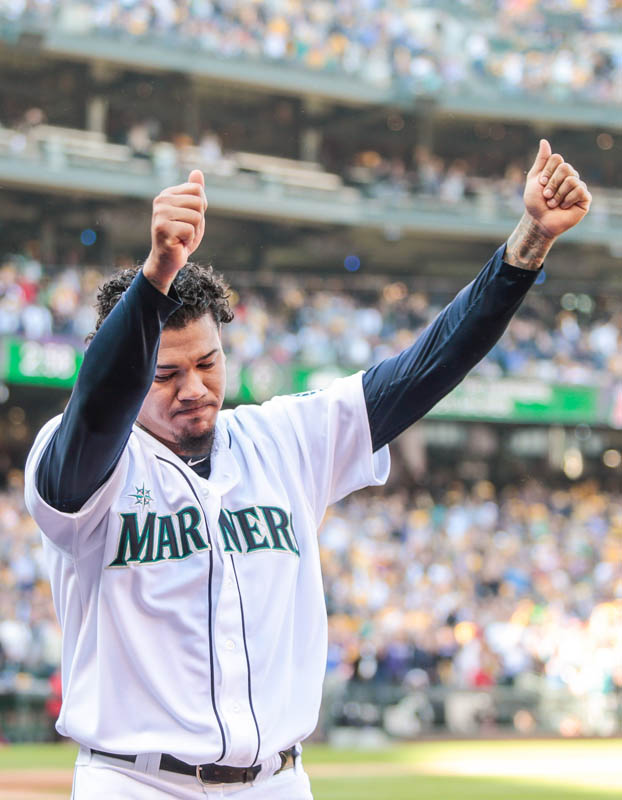

<%= row.full ? "wide" : "floated" %>"
data-mood="<%= row.crowd %>"
>
<% }) %>
<%= row.date %> <%= row.header ? "- " + row.header : "" %>
<% if (row.photo) { %>
 <% } %>
<%= row.body ? grunt.renderMarkdown(row.body) : "" %>
<% } %>
<%= row.body ? grunt.renderMarkdown(row.body) : "" %>

 <% } %>
<% } %>



Three reasons Mariners fans should be optimistic
by Ryan Divish
<%= grunt.renderMarkdown(json.strings.why.text) %>
...and three reasons they shouldn't
<%= grunt.renderMarkdown(json.strings.why_not.text) %>